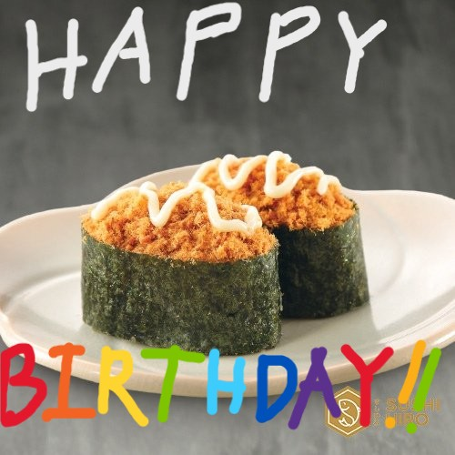

HAPPY BIRTHDAY, REYEN!!!
So I decided to make a little something for you... In fact, I've been doing this while in the same room/call with you for the past month HAHAHA!
I hope you'll forgive me for lying to you, but. There was never any commission..
It was all a ploy for me to take the time to think of what I could do or make for you as my birthday present to you.
Honestly, It feels weird writing this for you while sitting in the same call with you, but well.. I guess it just adds to the deception? HAHAHAHA
Funny how we're literally just talking about sushi as well... So heres a funny picture in conjucture with our current conversation as of making this fucking thing HAHAHA

Click here for your gifts!Heres a little introduction to this page for ya!
So, You might be wondering why I made this page now instead of way earlier. Well, that was mainly because I actually didn't think about making you a webpage until a few days ago, and like... I actually had a very different idea for your birthday present in the beginning, but it wasn't going very well... up until I got this brilliant idea to just make you a genuine working webpage and write poems for you just when I finally discovered how I still have it in me to write poems after all this time.
Anyways, enough yapping from me. I hope you enjoy reading all these poems I made for you!